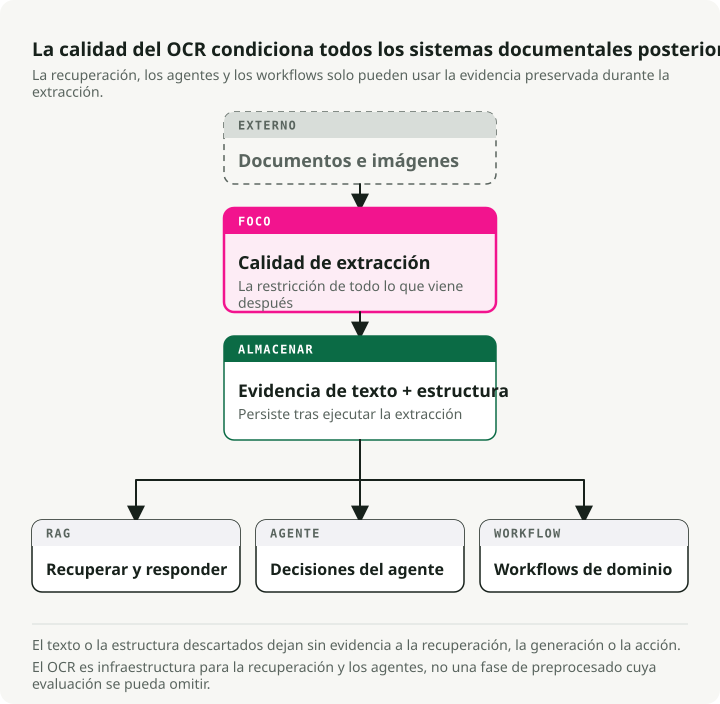
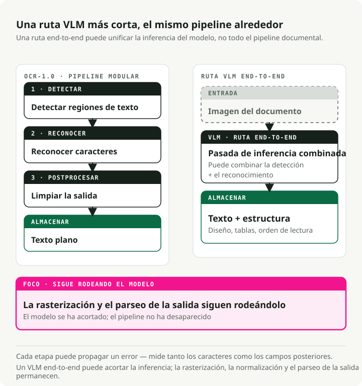
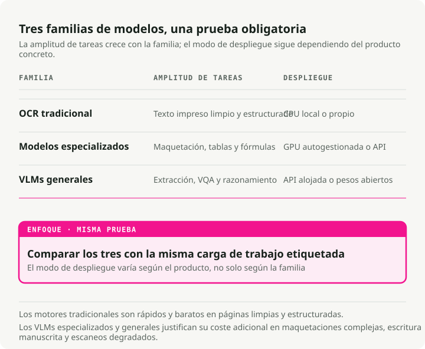
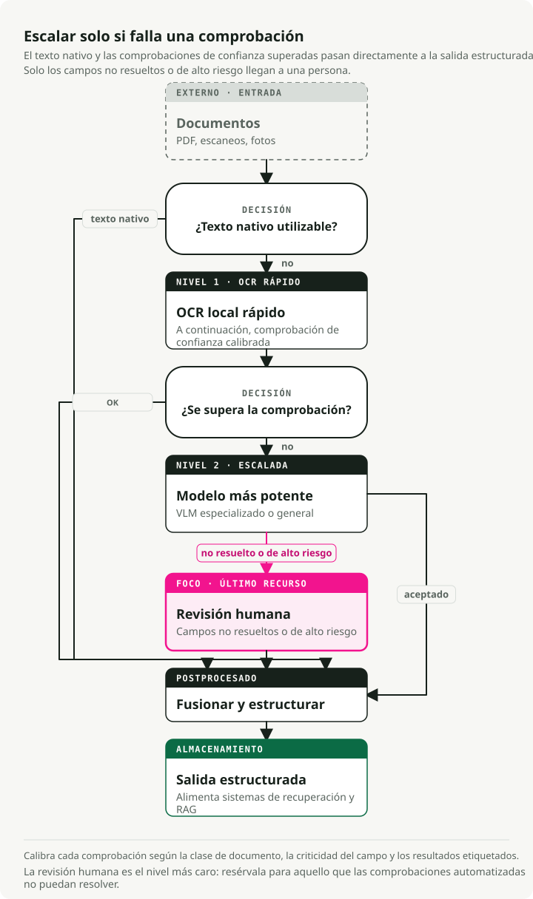

Traducción automática
Este artículo se tradujo automáticamente a partir de la versión original en inglés.
La guía definitiva sobre OCR en 2026: de pipelines a VLMs
El modelo que lidera los benchmarks más populares de OCR ocupa casi el último lugar cuando son los usuarios reales quienes evalúan su calidad. El campo evoluciona con tanta rapidez que los benchmarks aún no han podido adaptarse — y el OCR es ahora más importante que antes, ya que todo pipeline RAG y asistente de documentos debe procesar primero el texto a través de él.
Los modelos visión-lenguaje (VLMs) son los mejores para la extracción de texto en documentos complejos, logrando una tasa de error por carácter (CER) 3–4 veces menor que los motores tradicionales en escaneos ruidosos, recibos y texto distorsionado. En cuanto a... Tabla de clasificación de OCR Arena A principios de 2026, Gemini 3 Flash ocupa la cima, seguido por Gemini 3 Pro, Claude Opus 4.6 y GPT-5.2. Los modelos de propósito general de vanguardia superan ahora a los sistemas OCR especializados en documentos reales. Modelos de código abierto como dots.ocr (1.7 mil millones de parámetros, más de 100 idiomas) y Qwen3-VL (2 mil millones–235 mil millones) permiten alcanzar casi el mismo nivel con un costo de inferencia cercano a cero.
Los motores tradicionales siguen siendo la opción más rápida y económica para documentos impresos de alta calidad, y no existe un modelo que sea óptimo en todos los escenarios. Esta guía aborda los benchmarks, los modelos, las métricas y cómo implementarlos en entornos de producción.
Repositorio complementario: El Desafío de OCR — una demostración en un único cuaderno de notas que compara 5 tipos de documentos en 3 niveles de modelo (Tesseract → dots.ocr → Gemini 3 Flash) con el fin de mostrar las grandes diferencias en calidad y los compromisos en cuanto al costo.
Resumen: OCR-1.0 (pipelines modulares) está siendo reemplazado por OCR-2.0 (VLMs de extremo a extremo). Para escaneos planos y sin problemas de texto sencillo, el OCR tradicional (PaddleOCR/Tesseract) sigue siendo insuperable en cuanto a coste. En el caso de diseños complejos, recibos, escritura a mano o fotos inclinadas, se necesitan VLMs. Las APIs de Frontier como Gemini 3 Flash representan el estado actual del arte; los modelos de código abierto como dots.ocr y Qwen3-VL Son alternativas sólidas basadas en hosting propio.
Por qué el OCR es importante ahora
Durante décadas, el OCR fue un área periférica y poco destacada dentro de la informática. Digitalizaba archivos de bibliotecas, clasificaba correo postal y alimentaba herramientas de accesibilidad para personas con discapacidad visual. Era un trabajo importante, pero de nicho. Si no se trabajaba en gestión de documentos o logística, se podía ignorar sin problemas.
Eso cambió cuando los LLM se popularizaron. Cada pipeline RAG, asistente de conocimiento corporativo y agente de lectura de documentos se topa con el mismo problema: el LLM solo puede trabajar con texto que realmente pueda leer. De repente, millones de PDF, contratos escaneados, facturas y registros médicos tuvieron que convertirse en texto estructurado y limpio a escala industrial. El OCR pasó de ser un problema suficientemente resuelto a convertirse en un cuello de botella crítico para el resto de la arquitectura de IA.

Las consecuencias se van agravando progresivamente. La calidad de recuperación de información de su sistema RAG está limitada por la calidad del OCR que utilice. Si el proceso de extracción distorsiona una tabla, interpreta mal una fecha o omite un párrafo, ninguna estrategia de particionamiento inteligente ni ajuste de los modelos de embedding podrá solucionar el problema posteriormente. Un herramienta de análisis de contratos que pasa por alto una cláusula oculta en un apéndice escaneado deficientemente conlleva responsabilidades legales. Existe el mismo riesgo en el procesamiento de facturas, las revisiones de cumplimiento y el análisis de historiales médicos. Los errores de OCR afectan directamente a todas las decisiones que se tomen a continuación.
Por eso, el OCR vuelve a ser un tema central en las discusiones técnicas. El lado relacionado con los recursos (modelos más avanzados, VLM que reemplazan a los pipelines tradicionales) solo representa la mitad del problema. La otra mitad radica en que hoy en día el OCR funciona como una infraestructura esencial, tan fundamental como las bases de datos vectoriales o los modelos de embedding en la arquitectura moderna de IA.
Qué significa el OCR en la era de los modelos fundamentales
El OCR ha trascendido su definición original de “convertir texto impreso en caracteres legibles para máquinas”. Hoy en día se trata de inteligencia documental: la capacidad de extraer texto, estructura, tablas, fórmulas y significado semántico de cualquier entrada visual. Este campo está pasando de la versión “OCR-1.0” (pipelines modulares) a la versión “OCR-2.0”, donde un único modelo de tipo end-to-end se encarga de todas las etapas del proceso.

El pipeline tradicional de OCR consta de tres etapas fundamentales:
- Detección de texto: localización de las regiones que contienen texto (p. ej., CRAFT, DBNet).
- Reconocimiento de texto: conversión de las regiones detectadas en secuencias de caracteres (p. ej., CRNN).
- Procesamiento posterior: corrección ortográfica y corrección mediante modelos de lenguaje.
Esto funciona bien para documentos limpios. Pero los errores se propagan. Una tasa de error de caracteres del 2% por etapa se acumula hasta alcanzar un fallido 15–20% en la extracción de información en los recibos.
OCR-2.0 reduce ese flujo de trabajo a un único codificador de visión + decodificador de lenguaje que lee el documento directamente. Modelos como GOT-OCR 2.0 y VLMs como Gemini 3 Flash aportan razonamiento contextual a esta tarea. Pueden deducir que “MFG: 10/24” es una fecha de fabricación, no una fecha de vencimiento. El compromiso es la velocidad: los VLMs funcionan 5–10 veces más lentos que los motores tradicionales y, a veces, generan texto que parece plausible pero está incorrecto.
Una advertencia práctica: no dejes que la etiqueta “de extremo a extremo” te engañe. En producción, OCR-2.0 solo está unificado en la etapa de reconocimiento. Todavía se necesita rasterización de PDF para generar imágenes, normalización de imágenes (corrección de inclinación, ajuste de DPI) para lograr una calidad consistente, y análisis de salida para extraer campos estructurados del texto del modelo. El flujo de trabajo se ha acortado, pero no ha desaparecido.
El panorama de las pruebas de rendimiento (donde estamos en 2026)
Actualmente, seis conjuntos de datos realizan la mayor parte del trabajo de evaluación de OCR:
| Conjunto de datos | Año | Tamaño de la prueba | Idiomas | Métrica principal | Puntuación máxima | Saturación |
|---|---|---|---|---|---|---|
| FUNSD | 2019 | 50 documentos | English | F1 | ~93.5% | Moderado |
| SROIE | 2019 | 347 recibos | English | F1 | ~98.7% | Casi saturado |
| CORD | 2019 | 100 recibos | Indonesio | F1 | ~98.2% | Casi saturado |
| IAM | 1999 | ~1,861 líneas | English | CER | ~2.75% | Moderado |
| OCRBench v2 | 2024 | 1,500 privados | EN + CN | Puntuación /100 | 63.4 | Bajo |
| OmniDocBench | 2024 | 1.355 páginas | EN + CN | Compuesto | 94.62 | Bajo-medio |
La brecha entre “pruebas de rendimiento” y “entornos de prueba”
Las clasificaciones automáticas basadas en pruebas de rendimiento suelen entrar en conflicto con el juicio humano en entornos reales, y la brecha entre ambas es considerable.
| Modelo | OmniDocBench | OCR Arena ELO | Tasa de victorias en Arena | Diferencia |
|---|---|---|---|---|
| GLM-OCR | 94.62 | 1321 | 18.8% | Banco alto, arena baja |
| Gemini 2.5 Pro | 88.03 | 1569 | -- | Buen banco de pruebas, buena arena. |
| Gemini 3 Flash | 0.115 ED (menor = mejor) | 1770 | 77.2% | Banco de pruebas moderado, arena n.º 1 |
| DeepSeek-OCR | Bien | 1335 | 20.2% | Banco alto, arena baja |
En la plataforma comunitaria independiente OCR Arena, donde los usuarios votan de forma aleatoria en enfrentamientos cara a cara, los VLM de vanguardia ganan dichas competiciones. GLM-OCR y DeepSeek-OCR, que lideran en pruebas automatizadas como OmniDocBench, ocupa una posición cercana al final aquí.
La explicación más probable es que las pruebas automatizadas otorgan demasiada importancia a determinados tipos de documentos y formatos, mientras que los usuarios finales valoran la legibilidad en toda la gama de documentos reales y desordenados. No confíe únicamente en las cifras de las pruebas publicadas. Realice pruebas con los tipos de documentos que realmente utiliza.
Motores OCR tradicionales: aún relevantes
Si los motores tradicionales rinden peor con datos complejos, ¿por qué utilizarlos? Porque son rápidos y económicos al tratar datos estructurados y limpios.
| Motor | Velocidad (CPU) | Precisión de documentos limpios | Idiomas | Tamaño mínimo del despliegue |
|---|---|---|---|---|
| Tesseract 5.5 | ~0,5 s/página | 98–99% CER | 100+ | ~30 MB |
| EasyOCR | ~2 s/página | 95–97% de CER | 80+ | ~200 MB |
| PaddleOCR v5 | ~1 s/página | 97–99% CER | 106+ | 3,5 MB (móvil) |
Tesseract: sigue siendo la opción predeterminada para texto impreso de alta calidad
Tesseract (v5.5.x, Apache 2.0) es el motor de código abierto más ampliamente utilizado. Logra una precisión del 98–99 % en documentos impresos nítidos con una resolución de 300+ DPI, admite más de 100 idiomas y funciona únicamente con la CPU, sin ningún costo adicional por procesamiento. Sus limitaciones también son bien conocidas: es muy deficiente para el reconocimiento de escritura a mano, texto en escenas complejas o diseños estructurados de forma sofisticada. Sin embargo, para archivos masivos de texto limpio, no hay nada que supere su eficiencia en términos de coste.
EasyOCR
EasyOCR combina un detector CRAFT con un reconocedor CRNN. Gracias a la aceleración total por GPU de PyTorch, representa una opción rápida para el prototipado rápido y el reconocimiento de texto en escenas.
import easyocr
# Three lines for complete OCR
reader = easyocr.Reader(["en"])
result = reader.readtext("receipt.jpg")
# Returns: [(bbox, text, confidence), ...]
PaddleOCR
PaddleOCR (PP-OCRv5) es el motor tradicional más preparado para su uso en entornos de producción. Un núcleo PP-HGNetV2, derivado de GOT-OCR 2.0, permite el procesamiento de más de 106 idiomas. La versión para dispositivos móviles se comprime hasta alcanzar solo 3,5 MB, lo que la hace ideal para su implementación en entornos periféricos.
from paddleocr import PaddleOCR
ocr = PaddleOCR(use_angle_cls=True, lang="en")
result = ocr.ocr("receipt.jpg", cls=True)
for line in result[0]:
bbox, (text, confidence) = line
if confidence > 0.85:
print(f"{text} ({confidence:.2f})")
Los VLM se hacen con el control: modelos especializados y generales

Una vez que sales de la zona de “escaneo limpio” y te encuentras en el mundo real (recibos torcidos, etiquetas de productos desalineadas, fuentes pequeñas), los motores tradicionales dejan de ser eficaces.
La ola de OCR especializado
Entre 2025 y 2026 apareció una ola de modelos especializados para el análisis de documentos:
- dots.ocr (1,7 mil millones): Un modelo de código abierto que unifica la detección de maquetación, el reconocimiento y el orden de lectura. Soporta más de 100 idiomas y supera en rendimiento a modelos con el doble de tamaño que el suyo en OmniDocBench.
- GOT-OCR 2.0: Un modelo unificado con 580 millones de parámetros que funciona en una sola GPU de consumo (~4 GB de VRAM) y genera salida en formato Markdown, LaTeX y notación estructurada.
- DeepSeek-OCR (3B): Introduce la “compresión óptica contextual”, lo que permite reducir los tokens visuales entre 7 y 20 veces. Es capaz de procesar más de 200.000 páginas al día con una sola tarjeta A100.
- Mistral OCR v3: Un modelo propietario optimizado específicamente para la extracción de texto y la identificación de estructuras. Su precio es de 2 dólares por 1.000 páginas (1 dólar con la API por lotes); alcanza un 96,6 % de precisión en tablas complejas y un 88,9 % en escritura a mano.
VLMs de vanguardia
Para el razonamiento visual complejo o documentos profundamente desestructurados, recurren a los generalistas de vanguardia:
- Qwen3-VL (Alibaba): La familia líder de VLMs de código abierto para OCR, con capacidades que van desde 2B hasta 235B de parámetros. Cuenta con un contexto nativo de 256K tokens, muestra un buen rendimiento en condiciones de poca luz y imagen borrosa, y es compatible con 32 idiomas.
- Gemini 3 Flash (Google): Actualmente es el modelo líder en OCR Arena. Combina un razonamiento de nivel profesional con una latencia y un precio propios de la categoría Flash ($0.50 por token/mes).
- Claude Opus 4.6 (Anthropic): Es muy eficaz para la extracción estructurada de JSON a partir de gráficos y para el razonamiento en múltiples pasos sobre el contenido de los documentos.
- GPT-5.2 (OpenAI): Maneja eficazmente diseños densos de múltiples columnas, incluidos documentos de formato mixto que combinan tablas, texto e ilustraciones.
Latencia por nivel
En producción, la latencia es tan importante como la precisión:
| Nivel | Ejemplo | Latencia/página | Hardware |
|---|---|---|---|
| Tradicional | Tesseract, PaddleOCR | 0,5–3 s | CPU |
| VLM especializado | .dots.ocr, GOT-OCR | 3–8 s | GPU |
| Frontier VLM | Gemini Flash, GPT-5.2 | 5–15 s | API |
Métricas: medir lo que realmente importa
Elige una métrica que se ajuste al tipo de salida:
- CER y WER para texto plano. Tasa de error por carácter/ palabra. Un buen valor de CER es del 1–2 % en texto impreso. Cuidado: las opciones de preprocesamiento (conversión a minúsculas, espacios en blanco) pueden hacer que el CER varíe entre un 5–15 %, por lo que es necesario establecer un protocolo de comparación claro antes de evaluar los modelos.
- EMR y Field F1 para formularios y recibos. La tasa de coincidencia exacta es binaria, lo cual es ideal para códigos fiscales y totales. Field F1 equilibra la precisión y la recuperación según el tipo de campo.
- TEDS para tablas. La distancia de edición en árbol sobre representaciones en árbol HTML permite detectar desalineaciones de celdas a varios niveles que el CER no revela.
- ANLS para preguntas y respuestas en documentos. La similitud normalizada de Levenshtein promedio otorga puntos parciales a las respuestas con errores menores de OCR.
Para implementaciones: jiwer gestiona los valores CER/WER de forma nativa, y las implementaciones TEDS se encuentran en el repositorio OmniDocBench.
Pruebas de VLMs con OpenRouter
OpenRouter Ofrece una pasarela de API unificada para más de 400 modelos de IA a través de un único endpoint compatible con OpenAI. Cambiar entre Gemini Flash, Qwen-VL, GPT-5.x y Claude solo requiere modificar un parámetro.
import base64
from openai import OpenAI
client = OpenAI(base_url="https://openrouter.ai/api/v1", api_key="your-key")
def extract_text(image_path: str, model: str) -> str:
with open(image_path, "rb") as f:
image_b64 = base64.b64encode(f.read()).decode()
response = client.chat.completions.create(
model=model,
messages=[{
"role": "user",
"content": [
{"type": "text", "text": "Extract all text from this image, preserving layout as markdown."},
{"type": "image_url", "image_url": {"url": f"data:image/jpeg;base64,{image_b64}"}},
],
}],
max_tokens=4096,
)
return response.choices[0].message.content
# Compare models by changing one string
models = ["google/gemini-3-flash", "anthropic/claude-sonnet-4.5", "qwen/qwen3-vl-8b"]
for model in models:
print(f"\n--- {model} ---\n{extract_text('receipt.jpg', model)[:200]}...")
Para la extracción estructurada (por ejemplo, obtener campos tipados de un recibo), utilice response_format con un esquema JSON para que el modelo devuelva una salida validada y lista para su procesamiento:
import json
response = client.chat.completions.create(
model="google/gemini-3-flash",
messages=[{
"role": "user",
"content": [
{"type": "text", "text": "Extract the receipt fields from this image."},
{"type": "image_url", "image_url": {"url": f"data:image/jpeg;base64,{image_b64}"}},
],
}],
max_tokens=4096,
response_format={
"type": "json_schema",
"json_schema": {
"name": "receipt",
"schema": {
"type": "object",
"properties": {
"vendor": {"type": "string"},
"date": {"type": "string"},
"items": {
"type": "array",
"items": {
"type": "object",
"properties": {
"description": {"type": "string"},
"amount": {"type": "number"},
},
},
},
"total": {"type": "number"},
},
},
},
},
)
receipt = json.loads(response.choices[0].message.content)
Resultados de las pruebas de rendimiento: qué muestran realmente las cifras
En lugar de pedirte que ejecutes una notebook, aquí tienes los resultados clave obtenidos: OmniDocBench, el benchmark de análisis de documentos más completo disponible. Los datos provienen de Tabla de clasificación de OmniDocBench y Artículo de dots.ocr (arXiv:2512.02498):
| Modelo | Tamaño | Distancia de edición de texto (ES) | Tabla TEDS | En general |
|---|---|---|---|---|
| PaddleOCR-VL | 0,9 mil millones | 0.035 | 90.89 | 92.86 |
| .dots.ocr | 3B | 0.048 | 86.78 | 88.41 |
| Gemini 2.5 Pro | — | 0.075 | 85.71 | 88.03 |
| MinerU (pipeline) | — | 0.209 | 70.90 | 75.51 |
| GPT-4o | — | 0.217 | 67.07 | 75.02 |
El resultado más interesante es que PaddleOCR-VL, con tan solo 0.9 mil millones de parámetros, lidera la clasificación. Por su parte, dots.ocr, con 3 mil millones de parámetros, supera tanto a Gemini 2.5 Pro como a GPT-4o. El tamaño no lo es todo: en esta prueba, la arquitectura y los datos de entrenamiento son mucho más importantes.
🔧 Ejúzcalo usted mismo: El Desafío de OCR Se trata de un único notebook ejecutable que prueba cinco tipos de documentos (factura limpia, recibo arrugado, formulario manuscrito, artículo académico y documento multilingüe) en tres niveles diferentes (Tesseract → dots.ocr → Gemini 3 Flash), mostrando los resultados CER/EMR uno al lado del otro junto con un análisis de costes.
Despliegue de OCR en entornos de producción
Los sistemas OCR de producción adoptan una arquitectura por niveles. Es necesario separar las cargas de trabajo de la CPU (procesos de rasterización y normalización) de las cargas de trabajo de la GPU (inferencia).

💡 Nota sobre los pipelines de datos: Cuando es necesario convertir 10.000 PDF en formato Markdown listo para ser procesado por modelos LLM en un pipeline RAG, herramientas de orquestación como Docling resultan ideales, ya que gestionan el agrupamiento por lotes, las reintentos y la conversión a gran escala. Para garantizar una calidad óptima en la extracción de datos y tomar decisiones de enrutamiento, el patrón en niveles que se describe a continuación es el más eficaz.
El patrón de fallback por niveles
No utilice un VLM costoso con documentos de texto perfectamente limpios y fáciles de procesar. En su lugar, implemente un sistema de enrutamiento basado en la confianza.
- Comprobar la presencia de texto incrustado (Nivel 0). En los PDF, verificar si existe una capa de texto incrustado mediante
PyMuPDFopdfplumberantes de realizar la rasterización. Los PDFs nativos digitales (facturas, artículos académicos) suelen contar ya con texto perfecto; en estos casos, se puede prescindir por completo del OCR. - Intentar con un modelo rápido (por ejemplo, PaddleOCR o Tesseract, solo en CPU; maneja alrededor del 80 % de los casos sin problemas).
- Evaluar el nivel de confianza. Si el valor es superior a 0,90, aceptarlo de inmediato.
- Recurrir a un VLM de nivel intermedio. Si el valor está entre 0,70 y 0,90, dirigirlo a
dots.ocro Qwen3-VL-8B. - Escalar a un VLM de nivel premium o a un humano. Si la confianza es inferior a 0.70, redirigir la solicitud a Gemini 3 Flash / GPT-5.2 o a una cola de revisión por parte de un humano.
💡 Nota sobre el cálculo de la confianza: Los modelos rápidos emiten de forma nativa una métrica de confianza basada en las puntuaciones softmax de probabilidad por carácter. En entornos de producción, no se debe promediar ciegamente estas puntuaciones a lo largo de todo el documento. En su lugar, se debe utilizar un promedio ponderado por área (multiplicando la confianza de cada bloque de texto por el área de su cuadro delimitador) para evitar que una marca de agua muy pequeña y poco visible deteriore la puntuación de una página claramente legible. Para decisiones críticas (como números de identificación), se debe aplicar un umbral mínimo estricto, de modo que cualquier campo importante cuyo valor sea inferior a 0.90 active la escalada.
def area_weighted_confidence(ocr_result):
"""Compute area-weighted confidence from PaddleOCR output."""
total_area, weighted_sum = 0, 0
for line in ocr_result[0]:
bbox, (text, conf) = line
width = bbox[1][0] - bbox[0][0]
height = bbox[2][1] - bbox[1][1]
area = abs(width * height)
weighted_sum += conf * area
total_area += area
return weighted_sum / total_area if total_area > 0 else 0
Análisis de costes a gran escala
El punto de inflexión para el autoalojamiento suele ser de 100K–500K páginas/mes.
| Escalar | APIs de OCR en la nube (Mistral, Gemini) | VLM autohospedado (Qwen, dots) | Autogestionado tradicional |
|---|---|---|---|
| 10 000 páginas/mes | ~$20–25 | No es rentable. | Gratis (CPU) |
| 100 mil páginas/mes | ~$200–250 | ~$50–100 | Gratis – $20 |
| 1 millones de páginas/mes | ~$2,000–2,500 | ~$100–200 | Gratis – $50 |
| 10 millones de páginas/mes | ~$20,000–25,000 | ~$700–1,000 | $200–500 |
💡 Suposiciones: ~1,500 tokens/página. Los costes de la API en la nube se calculan en función de Mistral OCR 3 a 2 $ por 1K de páginas y Gemini 3 Flash por $0,50/M en tokens de entrada + \(3,00/M en tokens de salida (~\)2,25 por 1K páginas). La implementación en servidores propios con GPU presupone un único A100 a ~1,50 $/hora. OCR tradicional en una CPU de 4 núcleos.
A gran escala, los VLMs autohospedados desplegados mediante vLLM con PagedAttention resultan mucho más económicos que las APIs de los proveedores. Modelos como DeepSeek-OCR Se pueden reducir aún más los costes comprimiendo las páginas de los documentos en un menor número de tokens visuales: se logra una reducción de aproximadamente 10 veces en la cantidad de tokens, manteniendo al mismo tiempo una precisión del ~97 %.
Manejo de errores: el problema de las alucinaciones
A diferencia de los errores tradicionales del OCR (errores ortográficos predecibles estadísticamente), las alucinaciones de los VLM generan texto contextualmente plausible pero factualmente incorrecto. Un total en un recibo de “$42.50” podría convertirse en “$45.20”: sintácticamente válido, pero erróneo, e invisible para los correctores ortográficos.
Ejemplo concreto: Un VLM extrae un recibo con tres partidas (“$12.00”, “$18.50”, “$12.00”) y un total indicado de “$45.20”. El total real es $42.50: el modelo intercambió dígitos en una de las partidas (“$18.50 → $15.20”) y ajustó el total para que coincidiera con la suma que él mismo había generado. Todo parece coherente internamente, pero está equivocado.
Algunas medidas prácticas para mitigarlo:
- Validación mediante checksum. En las facturas, se debe comprobar que la suma de las cantidades de cada partida sea igual al total indicado, y señalar las discrepancias para su revisión por parte de un humano.
- Verificaciones con expresiones regulares para fechas (sin mes 13), números de teléfono (cantidad correcta de dígitos) y formatos monetarios.
- Comparación entre partidas y totales. Se debe contrastar el subtotal extraído por el VLM con la suma independiente de sus propias partidas.
- Verificación cruzada entre modelos. Se deben procesar los campos críticos con dos modelos diferentes y señalar las diferencias.
- Verificación cruzada con OCR tradicional. Se debe realizar un proceso de OCR tradicional sobre las cifras financieras junto con el VLM. Los errores del OCR tradicional son aleatorios, mientras que los del VLM son coherentes; por lo tanto, la concordancia entre ambos es una señal sólida de corrección.
Conclusiones clave
- Los VLM son la nueva opción por defecto para datos desordenados. Los motores tradicionales propagan errores en documentos sesgados, degradados o no estándar. Los VLM leen la página de una sola vez y logran un CER 3–4 veces menor.
- Las pruebas automatizadas \(\neq\) el rendimiento en el mundo real. Los modelos que lideran en OmniDocBench a menudo fallan en pruebas de preferencia humana cara a cara OCR Arena3. Clasifica tus pipelines por nivel de prioridad. Utiliza herramientas tradicionales y rápidas (Tesseract, PaddleOCR) para texto limpio, y reserva las inferencias costosas (Gemini 3 Flash, Mistral OCR) para los casos más difíciles.
- Cuidado con las alucinaciones. A diferencia de los errores tradicionales del OCR, las alucinaciones de los VLM generan texto plausible que elude a los correctores ortográficos.
- La versión de código abierto es lo suficientemente buena como para desplegarla.
dots.ocr(1,7 mil millones) yQwen3-VLConsigue realizar la mayor parte del trabajo en producción si el autohospedaje es necesario por motivos de coste o cumplimiento normativo.
La mayor parte de lo que antes se consideraba ingeniería OCR —ajustar la binarización, modificar manualmente los cuadros de detección, esforzarse por mejorar un último 1 % en documentos impresos nítidos— ya no constituye el foco principal del trabajo. Los problemas interesantes actualmente son la ruta de procesamiento, la evaluación y la defensa contra las alucinaciones.
Conclusiones clave
- El OCR en 2026 consiste en la comprensión de documentos, y no solo en el reconocimiento de caracteres.
- El OCR clásico sigue siendo útil cuando la entrada está limpia, el formato es estable y la latencia o el costo son factores determinantes.
- Los VLM son más adecuados cuando lo que importa es el diseño del documento, las tablas, la escritura a mano, los gráficos o la extracción semántica, en lugar de una salida de texto pura.
- La métrica adecuada depende de la tarea posterior: la completitud del texto, la estructura de las tablas, la extracción de campos, el soporte para citas o la tasa de corrección humana.
- Siempre mantenga una solución alternativa. Ningún modelo de OCR puede procesar de forma fiable todas las escaneos, idiomas, diseños o notas manuscritas.
Referencias
- Clasificación de OCR Arena - Batallas entre modelos impulsadas por la comunidad, cara a cara. El repositorio OCR Gauntlet - Cuaderno ejecutable para probar la arquitectura OCR de tres capas OmniDocBench - Evaluación de análisis de documentos de extremo a extremo puntos.ocr - Analizador de documentos VLM unificado con 1.7 mil millones de parámetros PaddleOCR - La pipeline OCR tradicional más completa OpenRouter - Pasarela de acceso unificada para pruebas A/B de modelos